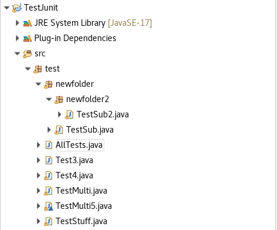
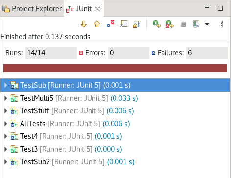
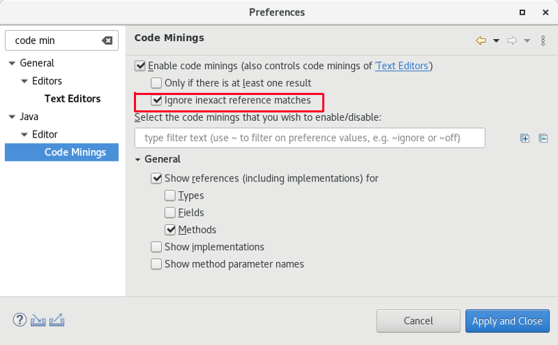
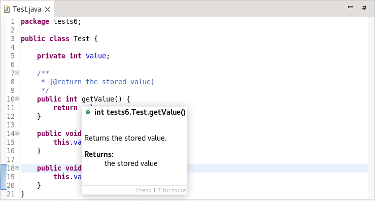
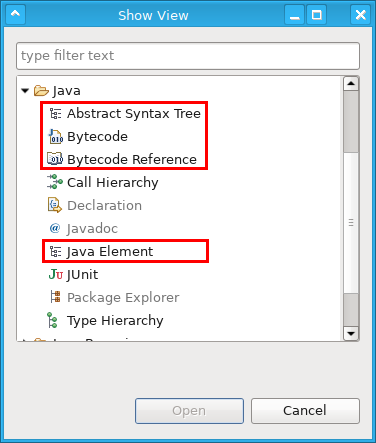
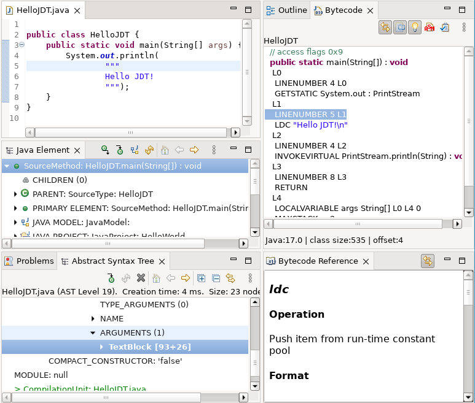

Here are descriptions of some of the more interesting or significant changes made to the Java development tools (JDT) for the 4.27 release of Eclipse. They are grouped into:
See also the Eclipse Platform What's New document for changes in the Platform.
We also recommend to read the Tips and Tricks.
Eclipse compiler for Java (ECJ) |
|
| ECJ separated from JDT Core |
Historically the code for ECJ was always in the same
This lead to few issues, with both Eclipse / standalone use of the ECJ compiler.
The (non-JDT) code inside Eclipse that required "default"
To resolve these (and other) problems, the ECJ code is moved from However, no change is without side effects. Known problems with the split of the ECJ from core bundle
|
JUnit |
|
| Launch JUnit tests in subpackages |
Previously, if one selected a package in the explorer that contained JUnit tests and subpackages that also contained JUnit tests, only the tests directly owned by the package would be run. The functionality has been enhanced so that JUnit tests in subpackages will be found by the JUnitLauncher and launched as well.
For example, in the following project, selecting the package test and right-clicking to Run as > JUnit Plug-in Test  will result in:  |
Java Editor |
|
| New code mining preference |
In the past, the code minings for method references used the Search preferences page setting: Ignore potential matches to determine if inexact matches should be filtered out. By default, this setting is false and so code mining could result in a number of entries that were only potential matches. To make this more intuitive and to change the default behavior, the Code Mining preference page has been enhanced to have its own setting: Ignore inexact matches which by default is set to true.
To set the new option, go to: Preferences > Java > Editor > Code Minings  |
| Javadoc inline @return |
As of Java 16, the Javadoc @return tag can be specified as an inline tag (with curly braces) in a method's Javadoc comment. When used it generates both the method description and the Returns section of the Javadoc for the method. It is specified as follows: {@return <return description>}. The generated Javadoc will show: Returns <return description>. for the method's main description and will use the same description to generate the Returns section. In the case where both the inline @return tag and block @return tag are specified, the new inline tag will override.
Support has been added in Eclipse to recognize the inline version of the tag and show the proper Javadoc hover. For details on the inline @return tag, see: Javadoc Comment Spec  |
JDT Developers |
|
| Four new views added to SDK |
Following four new Java / JDT related views are shipped now by default with the Eclipse SDK:
 All four views are actually not new, however they were previously only available for installation via Eclipse Marketplace and not included in the SDK itself. Now they are shipped with SDK package and also will be available for installation in other packages via https://download.eclipse.org/eclipse/updates/latest/ update site.
 |